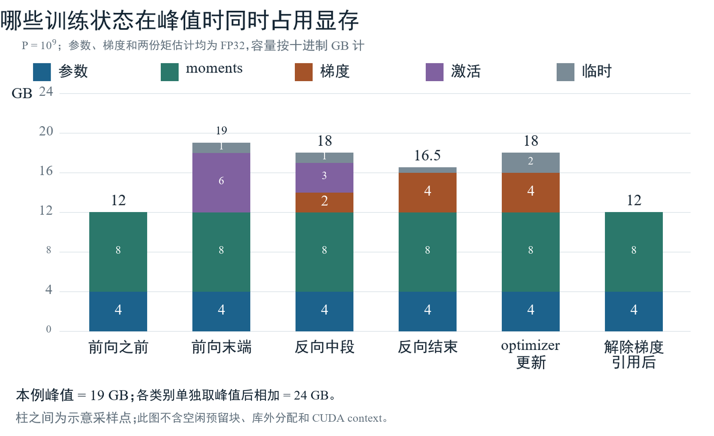
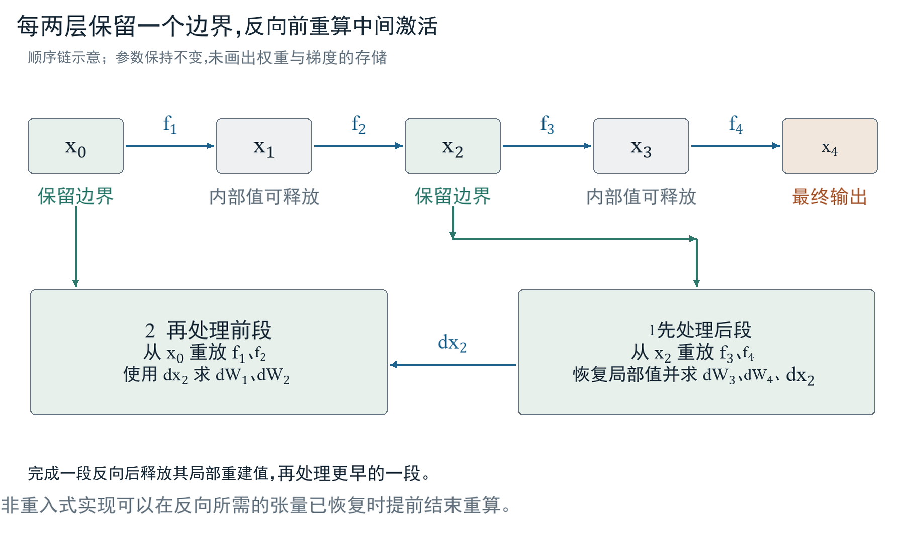

代码块旁的行号链接指向本课采用的提交，仓库及许可见课末。
1 首次优化器更新的显存峰值
把一轮训练拆开：模型加载产生参数；前向产生供反向使用的中间值；反向生成梯度并逐渐释放部分中间值；optimizer.step 读取梯度、更新状态和参数。Adam 的两份 moment 往往直到某个参数第一次有梯度时才创建。因此“模型加载成功”“完成一次 forward”“完成一次 backward”“完成第一次更新”对应不同的容量要求。
代码 1 在第一次更新时创建一阶矩、二阶矩及可选的 AMSGrad 状态
# Exponential moving average of gradient values
state["exp_avg"] = torch.zeros_like(
p, memory_format=torch.preserve_format
)
# Exponential moving average of squared gradient values
state["exp_avg_sq"] = torch.zeros_like(
p, memory_format=torch.preserve_format
)
if group["amsgrad"]:
# Maintains max of all exp. moving avg. of sq. grad. values
state["max_exp_avg_sq"] = torch.zeros_like(
p, memory_format=torch.preserve_format
)exp_avg 保存梯度的指数移动平均，exp_avg_sq 保存梯度平方的指数移动平均；两者与 p 同形。zeros_like 未传 dtype，默认继承 p 的 dtype。只有 amsgrad=True 才额外创建 max_exp_avg_sq。
外层逻辑先检查 p.grad is not None，再检查 len(state)==0。未参与本次反向的参数不会因为存在于模型中，就在这一段自动得到新状态。step 计数器是按参数张量保存的标量，不能按每个参数元素再加一整份计数器。
考虑 P=10⁹ 个可训练参数，全部 FP32，用普通 Adam、无 AMSGrad、无分片。参数 4 GB；反向结束又有 4 GB 梯度；首次 step 创建 8 GB moments。只计这三类存储，已经从加载后的 4 GB 变成 16 GB，约 14.90 GiB。第一次成功更新后，moments 通常跨 step 保留，下一轮前向会与它们共存。
训练显存有三个需要分别估算的峰值：首次初始化、稳态更新和检查点恢复。恢复时，CPU 暂存、GPU 格式转换以及新旧状态的短暂共存都可能增加开销。这里的估算以单设备、未分片为前提。
↑ 返回知识点目录2 底层存储的共享与释放
Tensor 包含 shape、stride、dtype、device 和指向 storage 的信息。view、transpose、detach 常与原张量共享 storage；clone 通常新建 storage。一个 [B,S,D] 激活被 reshape 成 [BS,D] 后，逻辑张量数增加，数据字节数可以完全不变。反过来，一个很小的切片若仍引用很大的底层 storage，也可能让整块分配继续存活。
先回答每一类对象由谁拥有
| 对象 | 容量的直接依据 | 常见生命周期 |
|---|---|---|
| 参数 | 独立 storage 的元素数 × 存储 dtype | 加载后常驻；分片、offload 会改变驻留 |
| 梯度 | 实际需要梯度的参数及累计 dtype | 反向创建或累加，更新后清零或解除引用 |
| optimizer state | 所选算法、参数集合及各状态 dtype | 通常首次更新创建，跨 step 保留 |
| 保存的激活 | 反向实际需要的中间值及其别名 | 从前向保存到对应反向最后一次使用 |
| 临时与通信缓冲 | kernel 工作区、转换、collective、prefetch | 按算子与异步依赖短时共存 |
冻结参数只省去这些参数的梯度与 optimizer state。若梯度仍需穿过一个冻结层传到可训练输入，反向仍可能需要该层的权重和中间值。LoRA 中应分别计冻结基座、可训练低秩矩阵和激活；把总参数量直接代入全参 Adam 的系数，会把 optimizer state 高估许多。
共享 embedding 与输出投影的权重应按同一个真实 Parameter/storage 计一次。是否真共享要看构建代码：仅数值相等的两个矩阵仍可能分别占内存。类似地，梯度若是通信 bucket 的 view，梯度与 bucket 不能重复计满两份；若发生拷贝或 dtype 转换，两份确实共存时又必须同时计入。
这里的求和要求各项对应不重复的底层存储；c 表示单列的通信缓冲，w 表示其他临时空间。allocator 预留但当前空闲的块、CUDA context、库直接分配的空间另行核对。将所有分类的历史最大值相加，只能形成粗糙上界，未必存在一个时刻同时达到这些最大值。
↑ 返回知识点目录3 每参数 16 字节的适用条件
设 P 为可训练参数元素数。对无分片的普通 Adam，两个 moments 各有 P 个元素；主权重是否独立存在、梯度在哪种 dtype 累计，都要看实现。autocast 只是为符合条件的算子选择计算 dtype，并不会自动把模型的持久参数换成 BF16，也不会自动创建一套独立 FP32 主权重。
四种明确配置，均忽略标量、对齐、激活与临时缓冲
| 配置 | 持久参数/主权重 | 梯度 | 两个 moments | 合计 |
|---|---|---|---|---|
| FP32 参数 + autocast | FP32 4P；参数自身用于更新 | FP32 4P | FP32 8P | 16P |
| 低精度工作权重 + 独立主权重 | BF16/FP16 2P + FP32 4P | 低精度 2P | FP32 8P | 16P |
| 上一行改 FP32 梯度累计 | 2P + 4P | FP32 4P | FP32 8P | 18P |
| 直接 BF16 参数 + 通用 Adam | BF16 2P，无独立主权重 | BF16 2P | BF16 4P | 8P |
最后一行可由 zeros_like 的 dtype 继承关系推出，数值行为却与前面不同。少占字节不构成训练精度保证。第一行的 FP32 参数已经承担高精度更新的角色，若再人为加 4P“主权重”，就是重复计数。autocast 的低精度转换与缓存仍可能额外占用显存，应该按实际活跃区间计入临时或保存张量。
P=7×10⁹ 时，16P=112×10⁹ byte=112 GB≈104.31 GiB；18P≈117.35 GiB。此时只缩小 microbatch 无法减少这些状态的理论总量。它主要减少激活。若固定状态已经超过设备可用空间，后续需要改变 optimizer/state dtype、可训练参数集合、offload 或分片方案。
代码 2 TorchTitan 显式指定 BF16 moments，覆盖默认继承关系
if param.grad is None:
continue
state = optimizer.state[param]
if state:
continue
state["step"] = (
torch.zeros((), dtype=torch.float32, device=param.device)
if group.get("capturable") or group.get("fused")
else torch.tensor(0.0, dtype=torch.float32)
)
state["exp_avg"] = torch.zeros_like(
param, dtype=torch.bfloat16, memory_format=torch.preserve_format
)
state["exp_avg_sq"] = torch.zeros_like(
param, dtype=torch.bfloat16, memory_format=torch.preserve_format
)
if group.get("amsgrad"):
state["max_exp_avg_sq"] = torch.zeros_like(
param,
dtype=torch.bfloat16,
memory_format=torch.preserve_format,该 hook 在原 Adam 的惰性初始化前填入 state。参数仍可为 FP32，两个 zeros_like 显式传入 torch.bfloat16，所以 moments 各占 2P。FP32 参数 4P + FP32 梯度 4P + BF16 moments 4P，共 12P。
固定版本的配置校验要求 moment_dtype="bfloat16" 时 fused=True；不能直接把同一混合 dtype 组合交给任意 foreach 或逐张量实现。load post-hook 也会恢复 moments 的 dtype，但原生加载过程中的临时 FP32 状态仍可能形成恢复峰值。
这个例子说明参数 dtype、计算 dtype、梯度归约 dtype、累计 dtype 和 optimizer state dtype 可以分别配置。报告“采用 BF16 训练”时，应把这些选项展开，否则同一标签下的容量估算可能相差数十 GB。分片训练还需要区分持久参数 shard 与临时计算参数，本课先保留这一接口。
↑ 返回知识点目录4 Adam 的矩估计与临时张量
设 θ 表示一个参数，g 表示其梯度。Adam 的一阶矩 m 对 g 作指数平均，二阶原始矩 v 对 g² 作指数平均。以零初始化时，第 t 步分别用 m/(1−β₁ᵗ) 和 v/(1−β₂ᵗ) 校正早期偏差。ε 位于更新式的分母中，在梯度很小时影响步长；使用低精度时，还应检查 ε 的表示精度。
手算第一步：θ₀=1、g₁=0.1、β₁=0.9、β₂=0.999、η=0.001、ε=10⁻⁸。m₁=0.01，v₁=0.00001；修正后 m̂₁=0.1，v̂₁=0.01，更新量约 0.001，θ₁≈0.999。v 保存平方量，不能把它误当成梯度的标准差；真正的平方根在更新分母中计算。
代码 3 偏差修正、临时分母与参数原位更新
bias_correction1 = 1 - beta1**step
bias_correction2 = 1 - beta2**step
step_size = lr / bias_correction1
bias_correction2_sqrt = bias_correction2**0.5
if amsgrad:
# Maintains the maximum of all 2nd moment running avg. till now
torch.maximum(max_exp_avg_sqs[i], exp_avg_sq, out=max_exp_avg_sqs[i])
# Use the max. for normalizing running avg. of gradient
denom = (max_exp_avg_sqs[i].sqrt() / bias_correction2_sqrt).add_(eps)
else:
denom = (exp_avg_sq.sqrt() / bias_correction2_sqrt).add_(eps)
param.addcdiv_(exp_avg, denom, value=-step_size) # type: ignore[arg-type]step_size 把 1−β₁ᵗ 吸收到步长；denom 使用 sqrt(v)/(1−β₂ᵗ)¹ᐟ² + eps。与上面的公式代数等价。sqrt() 产生临时结果，后续 add_ 可以复用这个结果，最终 addcdiv_ 改写 param。
原位更新参数不代表整个 step 没有临时空间。逐张量路径可以使大部分中间结果逐个出现；foreach 路径可能让一批参数的中间结果同时存在。
代码 4 foreach 先生成一组平方根张量，再批量更新
# Use the max. for normalizing running avg. of gradient
exp_avg_sq_sqrt = torch._foreach_sqrt(device_max_exp_avg_sqs)
else:
exp_avg_sq_sqrt = torch._foreach_sqrt(device_exp_avg_sqs)
torch._foreach_div_(exp_avg_sq_sqrt, bias_correction2_sqrt)
torch._foreach_add_(exp_avg_sq_sqrt, eps)
torch._foreach_addcdiv_( # type: ignore[arg-type]
device_params,
device_exp_avgs,
exp_avg_sq_sqrt,
step_size,
)torch._foreach_sqrt 返回 exp_avg_sq_sqrt 这一组新张量，随后对这组张量做除法、加 ε 和 addcdiv。批量执行减少逐张量调度开销，却可能增加同时存活的临时数据。具体峰值取决于分组、dtype、AMSGrad 和实际分支，不能给所有 optimizer 固定加一份 P。
AdamW 将权重衰减作为 θ←(1−ηλ)θ 的独立更新；普通 Adam 的耦合 L2 则先把 λθ 加入梯度，使它也进入 m、v。两种方法一般给出不同轨迹。以本例 λ=0.01 计，AdamW 先把 1 乘成 0.99999，再减去约 0.001，结果约 0.99899。weight decay 通常不需要额外持久状态，但分支产生的临时梯度仍可能影响峰值。
代码 5 同一实现明确区分解耦衰减与加入梯度的衰减
step_t += 1
if weight_decay != 0:
if decoupled_weight_decay:
# Perform step weight decay
param.mul_(1 - lr * weight_decay)
else:
# Nested if is necessary to bypass jitscript rules
if differentiable and isinstance(weight_decay, Tensor):
if weight_decay.requires_grad:
grad = grad.addcmul_(param.clone(), weight_decay)
else:
grad = grad.add(param, alpha=weight_decay)
else:
grad = grad.add(param, alpha=weight_decay)decoupled_weight_decay 分支原位缩放参数；另一分支生成加入参数项的梯度。读训练配置时应确认实际选的是 AdamW、Adam 还是显式设置的等价选项，不能只看到两个 moments 就断定算法完全相同。
情境 20 亿参数。工作参数与梯度各为 FP32，两个 moment 为 BF16，无分片和额外主权重。
问题 静态状态多少 GB 和 GiB？如果 AMSGrad 另加一份 BF16 最大二阶矩，又是多少？
答案
结论 普通状态 24 GB≈22.35 GiB；AMSGrad 为 28 GB≈26.08 GiB。
推导 每元素工作参数和梯度各 4 B，两份 moments 各 2 B，合计 12 B。20 亿元素需 24×10⁹ B，约 22.35 GiB。AMSGrad 另留一份 BF16 最大二阶矩，再加 4 GB，合计 28 GB，约 26.08 GiB。这一账目尚未加入激活和临时空间。
回看题干 ↑5 线性层反向所需的激活
令 X 的形状为 [M,D]，W 为 [D,H]，Y=XW 为 [M,H]，上游梯度 G=∂L/∂Y 与 Y 同形。反向要算 dW=XᵀG 和 dX=GWᵀ，因此需要 X、W、G；线性层的 Y 本身不一定是这个矩阵乘反向的必要输入。但 Y 的下一个操作可能需要它，例如非线性导数或归一化统计。保存集合由整个算子图与实现决定。
这个小例子可以直接复算：dW 第一项为 1×2+3×3=11，第二项为 2×2+4×3=16。若前向没有保留 X、也没有恢复 X 的方法，反向就无法从 Y 的两个数唯一重建这两个参数梯度。activation checkpoint 的作用正是保留更早边界，在需要时重新算出 X 这一类值。
对 SiLU、GELU、RMSNorm 等操作，保存输入、输出、均值/倒数尺度或局部中间结果的方案可能不同。FlashAttention 保存紧凑统计并在反向重建概率，已经在算子内部使用重计算；再给整个 Transformer block 加 checkpoint，会叠加另一个粒度的重计算，二者省掉的对象与增加的 FLOPs要分别追踪。
取 B=2、S=4096、D=4096，BF16 的单份 hidden activation 为 2×4096×4096×2=64 MiB。若 MLP 扩展维度 F=14336，一份 [B,S,F] 中间值为 224 MiB；SwiGLU 的两个投影和门控乘积可能产生多份同规模张量，融合与保存策略决定同时保留几份。不能只用一个 BSD 代替整层激活。
词表也可能主导最后一层：V=128000 时，[B,S,V] logits 有 1,048,576,000 个元素，BF16 约 1.953 GiB，FP32 约 3.906 GiB。显式 upcast、softmax、cross entropy 若各自物化大张量，峰值会出现在 loss 附近。将 cast 与 loss 融合、分块计算或词表并行的收益，要按实际生成代码与张量保存方式核对。
代码 6 TorchTitan 在 loss 内部进行 FP32 转换
return torch.nn.functional.cross_entropy(
pred.float(),
labels,
reduction=reduction,
ignore_index=IGNORE_INDEX,
)非词表并行路径把 pred.float() 传给 cross_entropy，reduction 来自参数，默认 sum。源码注释说明把转换放进可编译的 loss 区域，是为了给编译器融合 cast 与 loss 的机会。单看这一行不能声称所有配置都不会分配 FP32 logits；eager 与编译后执行需要分别判断。
↑ 返回知识点目录6 训练步内的显存曲线
继续用 P=10⁹、FP32 参数/梯度/moments，按十进制 GB 计。moments 已在此前 step 创建；本例 zero_grad(set_to_none=True)，没有其他引用。额外假定前向保存激活峰值 6 GB，算子工作区与梯度随时间如下表变化。它是一组用于理解生命周期的教学数据，不代表某个模型的实测。
同一时刻求和；各列的峰值无需同时出现
| 时刻 | 参数 | moments | 梯度 | 激活 | 临时 | 总 GB |
|---|---|---|---|---|---|---|
| 前向之前 | 4 | 8 | 0 | 0 | 0 | 12 |
| 前向末端 | 4 | 8 | 0 | 6 | 1 | 19 |
| 反向中段 | 4 | 8 | 2 | 3 | 1 | 18 |
| 反向结束 | 4 | 8 | 4 | 0 | 0.5 | 16.5 |
| optimizer 更新 | 4 | 8 | 4 | 0 | 2 | 18 |
| 解除梯度引用后 | 4 | 8 | 0 | 0 | 0 | 12 |
该例的 live peak 为 19 GB。把每类的历史最大值相加则得到 4+8+4+6+2=24 GB，超过实际示例峰值 5 GB。反向过程也未必单调下降：释放激活与生成梯度、临时工作区交错，某些算子的反向输出还会暂时与输入共存。

教学容量曲线：先逐时刻求和，再取最大值；不含 allocator 空闲预留和库外分配。
代码 7 解除 grad 引用与把既有缓冲清零，产生不同存活区间
with torch.autograd.profiler.record_function(self._zero_grad_profile_name):
for group in self.param_groups:
for p in group["params"]:
if p.grad is not None:
if set_to_none:
p.grad = None
else:
if p.grad.grad_fn is not None:
p.grad.detach_()
else:
p.grad.requires_grad_(False)
if not foreach or p.grad.is_sparse:
p.grad.zero_()set_to_none=True 令 p.grad=None；在没有其他引用和在途使用时，存储可以交还 allocator。False 则将已有梯度原位清零，缓冲继续占用。两者都不意味着 nvidia-smi 立即下降，因为 allocator 可能缓存这块内存。
语义也有差别：Adam 的初始化与更新路径跳过 grad=None 的参数；一个真实的全零梯度仍可能使旧 momentum 衰减并引起参数变化，AdamW 也可能继续做 weight decay。把 None 和零张量互换前，应确认未使用参数的预期行为。
删除 Python 名字只减少一条引用。autograd 保存对象、其他 view、优化器容器或尚未结束的异步工作都可能继续保留存储。TorchTitan 的 forward/backward 入口在 CUDA Graph 的某些模式下选择保留梯度地址，这正说明“每步全部设 None”也要服从图捕获和缓冲复用合同。
代码 8 一个更新窗口只清一次梯度，并根据图模式保留或解除缓冲
"""Run all microbatch groups for one optimizer update."""
if not microbatch_groups:
raise ValueError("microbatch_groups must not be empty.")
self.num_accumulation_steps = len(microbatch_groups)
self.garbage_collector.run(self.num_completed_steps + 1)
self.optim.zero_grad(
set_to_none=not self._accelerator_graph_per_microbatch_group_enabled
)
global_loss_token_counts = torch.as_tensor(
global_loss_token_counts, device=self.device
)num_accumulation_steps 来自 microbatch_groups 的长度。zero_grad 放在运行整组 microbatch 之前，不能移到每个 microbatch 的 backward 后；后者会丢掉前面累积的贡献。
↑ 返回知识点目录7 混合精度的数值范围与转换缓存
FP16 有 5 位指数、10 位显式尾数；BF16 有 8 位指数、7 位显式尾数；FP32 有 8 位指数、23 位显式尾数。BF16 与 FP32 的指数范围接近，但在相同数值附近的间隔大得多。在 [1,2) 区间，FP16 相邻值间隔为 2⁻¹⁰，BF16 为 2⁻⁷，FP32 为 2⁻²³。
数值格式的两个独立维度
| 格式 | 最大有限正值，约 | 最小正正规值 | [1,2) 间隔 |
|---|---|---|---|
| FP16 | 65504 | 2⁻¹⁴≈6.10×10⁻⁵ | 2⁻¹⁰≈0.0009766 |
| BF16 | 3.39×10³⁸ | 2⁻¹²⁶≈1.18×10⁻³⁸ | 2⁻⁷=0.0078125 |
| FP32 | 3.40×10³⁸ | 2⁻¹²⁶≈1.18×10⁻³⁸ | 2⁻²³≈1.19×10⁻⁷ |
更小的次正规数仍可表示一部分值；设备指令是否保留它们还受具体实现影响。FP16 最小正次正规数为 2⁻²⁴≈5.96×10⁻⁸。在理想的就近舍入下，10⁻⁸ 会变为零。因此梯度的动态范围和累积误差都需要检查，单纯看参数是否溢出不够。
主权重解决的是小更新的保留问题。假设每一步都给权重 1.0 加 0.001，并将结果直接舍入为 BF16，每次都会回到 1.0。若先在 FP32 主权重中累加，四步后得到约 1.004，再转换为 BF16 可得到 1.0078125。这个常量更新例子说明高精度 accumulator 能保留尚未达到工作 dtype 分辨率的变化；真实优化轨迹还取决于每一步产生的梯度。
常见 autocast 用法让 FP32 参数常驻，把适合的 GEMM/卷积计算转为较低精度，而某些归约或数值敏感操作维持较高精度。显式 dtype、原位操作、out 参数及后端策略会影响是否参与转换。backward 通常沿前向选择的计算类型执行，梯度最终存储 dtype 还受参数和框架管理方式约束。
代码 9 退出最外层 autocast 时清理转换缓存并恢复上下文
def __exit__(self, exc_type: Any, exc_val: Any, exc_tb: Any): # type: ignore[override]
if torch._jit_internal.is_scripting():
return
# Drop the cache when we exit to a nesting level that's outside any instance of autocast.
if torch.autocast_decrement_nesting() == 0:
torch.clear_autocast_cache()
torch.set_autocast_enabled(self.device, self.prev)
torch.set_autocast_dtype(self.device, self.prev_fastdtype)
torch.set_autocast_cache_enabled(self.prev_cache_enabled)nesting 降到零才清缓存，嵌套上下文不会每次都清空。转换后的权重可能在 autocast 有效区间内被复用；如果某个转换结果又被反向图保存，清理缓存条目也不能越过其实际引用与使用关系强行释放。
使用 BF16 计算时，FP32 参数仍需常驻。峰值显存还包括低精度工作副本和反向传播保留的中间值。
Mixed Precision Training：高精度更新与梯度缩放的原始论述
↑ 返回知识点目录8 梯度缩放与裁剪顺序
设正缩放因子为 s，把 loss 变成 sL，链式法则使梯度变为 sg。在执行 optimizer 更新前除以同一个 s，理论上恢复原梯度。缩放把原本过小的梯度推入 FP16 可表示范围，但无法修复前向已经产生的 inf、NaN，也无法恢复在缩放之前已经舍入丢失的信息。
例如 g=10⁻⁸、s=65536，缩放后为 0.00065536，可在 FP16 中保留近似值；在高精度中除回 s，恢复一个非零近似梯度。反方向也要检查：若 g=2，同样缩放会得到 131072，超过 FP16 最大有限值。动态 scaler 通过检查非有限梯度，选择跳过有问题的更新并调小 scale，连续成功后再按策略增长。
代码 10 计算逆 scale，并同时执行 unscale 与非有限检查
inv_scale = (
self._scale.double().reciprocal().float()
if self._scale.device != torch.device("mps:0")
else self._scale.reciprocal()
)
found_inf = torch.full((), 0.0, dtype=torch.float32, device=self._scale.device)
optimizer_state["found_inf_per_device"] = self._unscale_grads_(
optimizer, inv_scale, found_inf, False
)
optimizer_state["stage"] = OptState.UNSCALEDinverse scale 与 found_inf 使用专门精度；_unscale_grads_ 遍历 optimizer 管理的梯度，并记录各 device 的检查结果。这个流程管理更新正确性；梯度 storage 的大小仍由元素数与 dtype 决定。
代码 11 普通 optimizer 路径只有非有限检查通过才更新参数
optimizer: torch.optim.Optimizer,
optimizer_state: dict[str, Any],
*args: Any,
**kwargs: Any,
) -> float | None:
retval: float | None = None
if not sum(v.item() for v in optimizer_state["found_inf_per_device"].values()):
retval = optimizer.step(*args, **kwargs)
return retvalfound_inf_per_device 的结果非零时，本分支不调用 optimizer.step。支持 AMP 的 fused optimizer 另有将 scale/found_inf 交给 kernel 的路径，不能把这一个 Python 条件当成所有实现的唯一执行形式。
梯度裁剪应针对真实的未缩放梯度。取 g=[3,4]，L2 norm=5，max_norm=1，正确裁剪为 [0.6,0.8]。若先对 s=100 的梯度 [300,400] 裁剪到 norm=1，再除以 100，结果变成 [0.006,0.008]，更新量小了一百倍。应先 unscale，再对整个本次更新的梯度求 norm、裁剪，随后 step 和 scaler.update。
代码 12 用同一个受限系数缩放一组梯度
clip_coef = max_norm / (total_norm + 1e-6)
# Note: multiplying by the clamped coef is redundant when the coef is clamped to 1, but doing so
# avoids a `if clip_coef < 1:` conditional which can require a CPU <=> device synchronization
# when the gradients do not reside in CPU memory.
clip_coef_clamped = torch.clamp(clip_coef, max=1.0)
for (device, _), ([device_grads], _) in grouped_grads.items():
if (foreach is None and _has_foreach_support(device_grads, device)) or (
foreach and _device_has_foreach_support(device)
):
torch._foreach_mul_(device_grads, clip_coef_clamped.to(device))clip_coef=max_norm/(total_norm+1e−6)，再限制其最大值为 1。加 1e−6 使实际结果与上面的理想算例有微小差别。逐参数分别算 norm 会改变“整模型梯度范数受限”的定义；分片后的全局 norm 还需要后续分布式聚合。
BF16 的指数范围使许多 BF16 训练路径不需要 FP16 式 loss scaling，但这不保证所有训练都稳定；mantissa 精度、归约误差和优化器状态仍然重要。使用 scaler 时，一个累积窗口内应保持相同 scale，等所有 microbatch 都 backward 后只 unscale 一次。若中途改变 scale 或混合已还原与未还原的梯度，最终和无法用一个常数正确还原。
PyTorch AMP：累积、unscale、裁剪与更新次序
↑ 返回知识点目录9 梯度累积期间的计算图
设一个更新窗口包含 K 个 microbatch，各自完成 forward/backward，参数保持不变，梯度累计到同一组缓冲，最后只执行一次 optimizer.step。这样可以把一次大 batch 的激活拆成多次较小峰值。参数、moments 和累计梯度的容量不会随 K 自动除小；执行次数、调度开销与可能的通信次数却会增加。
这条 batch 公式假定每个 rank、每次 microbatch 的样本数量一致，且 PDP 是独立数据副本的数量。TP、PP、EP 等协作处理同一份样本的 rank 不能再乘进去。对语言模型，padding、packing 和 ignored labels 使“样本数”与实际参与 loss 的 token 数不同，loss 归一化应按训练目标定义。
若第 i 个 microbatch 的有效 token 数为 nᵢ，其 mean loss 为 Lᵢ，则整个更新窗口的 mean loss 为 ΣnᵢLᵢ/Σnᵢ，梯度同样加权。两个 microbatch 分别有 2、6 个 token，局部 mean 梯度为 1、3，正确结果为 (2×1+6×3)/8=2.5；简单平均两个局部均值只得到 2。只有 nᵢ相同，才可用每次 mean loss 除以 K。
代码 13 TorchTitan 以全局有效 token 数归一化 sum loss
# loss: V->P, annotate global_loss_token_counts
if current_spmd_mesh() is not None:
spmd.assert_type(ce, {"dp": spmd.P, "cp": spmd.P})
if global_loss_token_counts is not None:
spmd.assert_type(
global_loss_token_counts,
{"dp": spmd.R, "cp": spmd.R, "tp": spmd.I},
)
if global_loss_token_counts is not None:
loss = loss / global_loss_token_counts
metrics = {k: v / global_loss_token_counts for k, v in metrics.items()}
return loss, metricscross_entropy_loss 默认采用 sum reduction；此处再除以 global_loss_token_counts，使不同长度 microbatch 的贡献按有效 token 计权。该版本还通过 SPMD 标注区分 partial 与 replicated 值。
这个例子只对单设备上的 microbatch 累积作了归一化。普通 DDP 还会在 rank 间平均梯度；沿用同一分母时，需要检查是否重复除以数据并行度。
代码 14 每个 microbatch 及时执行反向
with self.parallelism_context.activate_spmd(
typechecking=self.config.debug.spmd_typechecking,
):
pred = self.model_parts[0](inputs, **model_kwargs)
loss, self.loss_metrics = self.loss_fn(
pred,
labels,
**loss_kwargs,
)
del pred
with spmd.no_typecheck():
loss.backward()
return loss模型先生成 pred，再构造 loss，随后 del pred 并 backward。del 仅去掉局部引用，loss 的反向图仍可保留必要数据；普通 backward 消费完保存张量后，才有机会回收它们。
若把 K 个带图的 loss 收进列表，最后再将它们求和做一次 backward，就可能同时保留 K 份前向激活，失去逐 microbatch 降低峰值的主要收益。需要比较整个训练循环的调用次序。
代码 15 日志累计使用 detach，并为独立结果 clone
detached_loss = loss.detach()
if accumulated_loss is None:
accumulated_loss = detached_loss.clone()
else:
accumulated_loss.add_(detached_loss)
loss_metrics.append(
[
{key: value.detach().clone() for key, value in metrics.items()}
for metrics in group_loss_metrics
]detached_loss 去掉梯度图关系，首次 clone 创建独立累加结果，后续 add_ 更新这个结果。metrics 也逐个 detach().clone()。这里只保存标量或小型指标，不应把大型 logits、hidden states 无限制收进日志列表。
大 batch 与梯度累积的数学等价还要求：同一参数下评估每个 microbatch；loss 权重一致；窗口内不更新 optimizer；全局裁剪在累计完成后执行。BatchNorm 的跨样本统计、依赖 batch 的 loss、dropout 随机序列和浮点求和顺序都可能造成差异。混合精度溢出还可能让某次更新跳过，学习率调度应按期望的更新计数语义推进。
累积过多可能使 GPU 启动次数增加、矩阵尺寸变小、张量核利用率下降。使用更多 microbatch 也会让梯度缓冲跨更长时间存活。是否值得，取决于它是否解除了激活容量限制，以及实际每步时间和单位有效 token 成本。
情境 三个 microbatch 的有效 token 数为 2、3、5，各自按 token 求出的平均梯度为 1、2、4。
问题 求整窗按 token 的均值，并与三个局部均值直接平均比较。
答案
结论 正确值 2.8，局部等权会给出 7/3。
推导 把局部 mean 还原为 sum，三批贡献分别为 2×1=2、3×2=6、5×4=20，总梯度和 28。窗口有 10 个有效 token，mean 为 2.8。三个 mean 等权得到 7/3，短 microbatch 的单个 token 权重会被放大。
回看题干 ↑10 激活重计算的边界
考虑一条四层链 x₁=f₁(x₀)、x₂=f₂(x₁)、x₃=f₃(x₂)、x₄=f₄(x₃)。普通反向需要某些中间输入。若以两层为一段，只长期保留段边界 x₀、x₂；反向处理后半段时，从 x₂ 重放 f₃、f₄，恢复局部需要的值，完成这段反向后释放；再从 x₀ 重放前半段并求梯度。参数在重放期间必须与原前向一致。

两段顺序链的教学示意：只画激活边界与重放依赖，不表示实际 kernel 数量或耗时。
在均匀 L 层链的简化模型中，每层保存量为 A，把每 k 层划为一段。长期边界约 L/k 份，当前重放段的内部约 k 份，激活量近似 A(L/k+k)，另加输出、梯度、参数和工作区。对 k 求导，−L/k²+1=0，得到 k≈√L。该结论依赖均匀链和这种调度，不能直接替代实际 Transformer 的容量测量。
取 L=64、A=64 MiB，不重计算的这部分为 4 GiB。k=8 时，简化峰值为 16A=1 GiB；k=1 或 k=64 时约 65A=4.0625 GiB。只包住整张模型、或者把每个极小算子各自包起来，都可能错过合适边界。端点、残差、非均匀激活和局部反向临时量会修改这些近似。
常见“每个 Transformer block 做 checkpoint”属于另一种层次：每个 block 的边界 hidden 较小，block 内部包含较大的 MLP、Attention 中间值。假设 64 个 block 各有 64 MiB 边界和 256 MiB 内部保存量，原本共约 20 GiB；保留全部边界、只重建当前 block 的内部，粗算约 4.25 GiB。这个例子解释为什么 block 粒度能节省许多，即使它仍保存每个 block 的输入。共享存储和真正的峰值仍要进一步扣重。
重放消耗计算。若原本前向 F、反向 2F，一个完整额外前向将总量从 3F 提高到约 4F，即增加约 33%。这只是 FLOPs 模型，时间还受融合、内存流量、通信重放、流水和调度影响。节省显存后若能提高 microbatch、减少分片通信，端到端吞吐也可能改善。
Training Deep Nets with Sublinear Memory Cost：链式网络的存储与重计算折中
情境 100 层均匀串行网络，每层激活 32 MiB。每 k 层存一份边界，估算式为 A(L/k+k)，取 k=10。
问题 求重算模型中的激活总量、全保存总量；说明完整训练峰值还需要哪些对象。
答案
结论 640 MiB 对 3200 MiB；参数、梯度、优化器及临时工作区要另记。
推导 每 10 层保存边界，100/10=10 份边界；重算一个片段还要按模型保留约 10 份段内激活。共 (10+10)×32=640 MiB。原模型保存 100×32=3200 MiB。完整峰值还须加入参数、梯度、优化器与当时同时存在的工作区。
回看题干 ↑11 PyTorch 的保存钩子与重放
在 non-reentrant checkpoint 路径中，前向保存张量时，框架用轻量 holder 记录一个占位关系；反向请求这个值时，unpack hook 找回 checkpoint 输入并执行 recompute_fn。恢复值再进入后续反向。checkpoint 保留了计算图合同与可恢复边界，省掉的是指定范围内长期保留的张量。
代码 16 保存 holder 与元数据，延后实际张量的恢复
def pack_hook(x):
# See Rule 4 above
holder = _Holder()
frame.weak_holders.append(weakref.ref(holder))
# Save metadata to detect non-determinism
if frame.metadata_fn is not None:
with torch.no_grad():
frame.x_metadatas.append(frame.metadata_fn(x))
return holderweak_holders 使用弱引用追踪仍然需要的 holder；metadata_fn 可以记录 shape、dtype、device 等信息，帮助检查重放一致性。保存元数据不等于保存完整数值，也不构成自动的逐元素正确性证明。
代码 17 第一次需要时重放，并检查保存对象是否匹配
if not frame.is_recomputed[gid]:
args = frame.get_inputs()
try:
with _recomputation_hook(
weakref.ref(frame), gid
), torch.autograd.enable_grad():
# See Note: [compiled autograd and checkpoint unpack hook]
_run_fn_with_dynamo_disabled(frame.recompute_fn, *args)
except _StopRecomputationError:
pass
frame.is_recomputed[gid] = True
frame.check_recomputed_tensors_match(gid)
frame.get_inputs() 提供边界输入；_recomputation_hook 捕获重放过程中需要的值。is_recomputed 记录当前 graph task 的恢复状态，避免在同一任务中无条件重复整段。
捕获 _StopRecomputationError 表明实现允许在必要张量已经恢复时提前结束；这与“每个 checkpoint 每次都完整多跑一次 forward”有差别。实际开销取决于保存点和依赖图。
PyTorch 的 use_reentrant=False 路径支持 early stop，也能记录前向 autograd 图；reentrant 路径具有不同的梯度要求、嵌套结构支持和 backward API 限制。写新的调用应显式指定预期路径并核对版本，不要依赖默认值随版本变化后的行为。activation checkpoint 也与保存训练恢复文件的 checkpoint 不同：前者作用于一次训练图，后者保存跨故障恢复所需状态。
重放必须等价于原前向所需计算。dropout 的随机 mask 若改变，求得的梯度就对应另一条路径；模块计数器、缓存追加、BatchNorm running statistics、路由随机性和外部副作用也不能被随意再执行一遍。输入或参数若在两次执行间被原位修改，可能触发版本检查，或者在未被检查到的外部状态上产生错误结果。
代码 18 重放时恢复原前向的随机状态
def recompute_fn(*args) -> None:
# This will be called later during recomputation. This wrapping enables
# the necessary global state to be captured.
rng_devices = []
if preserve_rng_state and had_device_in_fwd:
rng_devices = fwd_devices
with torch.random.fork_rng(
devices=rng_devices, enabled=preserve_rng_state, device_type=device_type
):
if preserve_rng_state:
torch.set_rng_state(fwd_cpu_state)
if had_device_in_fwd:
set_device_states(fwd_devices, fwd_device_states, device_type=device_type)
preserve_rng_state 为真时，fork_rng 包装重放，并恢复 CPU 与已记录设备的 RNG 状态。后续代码也恢复 autocast 上下文，使重放的计算精度与前向保持一致。
默认的 RNG 保存有设备范围限制，函数内部迁移到未记录的新设备、使用外部随机源或修改非 RNG 状态时，需要额外设计。确定性检查默认关注部分元数据，仍需通过梯度与 loss 比较验证语义。
↑ 返回知识点目录12 重计算区域的选择
一个大 GEMM 可能计算昂贵，但其保存张量是否占据峰值，要结合消费者判断。一个简单逐元素门控可能只需少量 FLOPs，却产生巨大的中间激活；重放它常有很好的空间收益。可以先估每个候选的“峰值时减少的字节 / 增加的时间”，再检查区域间共享输入和重叠，因为收益通常不能独立相加。
TorchTitan 的本课固定提交已采用 torch_remat 的区域策略。模型声明语义区域，配置给出 save_regions 与 recompute_regions，后者匹配时优先；未被保留区域覆盖的计算在反向需要时重放。此前的 operator-level SelectiveAC 接口已从该版本移除，旧版本示例不能直接照搬。
代码 19 先配置区域，再包装每个 Transformer block 的 forward
for layer_id, transformer_block in transformer_blocks:
assert isinstance(transformer_block, Module)
transformer_block.configure_remat_regions(
self.save_regions, self.recompute_regions
)
base_fqn = f"layers.{layer_id}"
transformer_block.forward = remat.checkpoint(
region_name=base_fqn,
determinism_check=self.determinism_check,
preserve_rng_state=False,
saved_tensors_hooks=(
saved_tensors_hooks(transformer_block, base_fqn)
if saved_tensors_hooks is not None
else None
),
)(transformer_block.forward)configure_remat_regions 将策略应用到模型声明的区域；remat.checkpoint 以 layers.<id> 标识每个 block，并可接入 saved_tensors_hooks。此时“保存哪些值”和“保存值放在哪里”成为可组合的两个选择。
这里 preserve_rng_state=False 来自 torch_remat 的特定合同；该配置要求对会在保留区域内推进的随机状态注册 RecomputeStateHook。不能将这个值当成 PyTorch 原生 checkpoint 的通用建议。
该固定版本默认保留模型声明的区域，但把 *routed_experts.w13.* 列入重算列表。MoE 的 w13 中间激活随 top-k 展开，可能很大；w2 输入则是重放本来就要恢复的激活，继续重算 w2 未必减少所需保存量。EP token-dispatcher 的通信区域被保留，避免重放时再次执行 AllToAll。完整 MoE 布局将在第九课单独推导。
FullActivationRematConfig 也遵守模型中 recompute=False 的保留区域，例如路由决定与某些带副作用的累计。因此“full”描述策略覆盖范围，不能据名称推断任意操作都会执行第二遍。没有声明区域的模型、未匹配的名字、跨 PP stage 的模型部分，都需要检查实际生效路径。
本课只比较接口与源码行为，没有将这两个固定仓库版本组合安装或运行。生产中应固定兼容的框架、编译器和模型配置，并确认重计算没有重复通信、随机采样或其他状态更新。
情境 训练步含前向 30、反向 60、更新等 10 ms，重算另花 25 ms。
问题 有效 token 至少增长到原来的多少倍才提升吞吐？若翻倍，吞吐怎样变化？
答案
结论 须大于 1.25 倍；翻倍时吞吐为原来的 1.6 倍。
推导 原步时 30+60+10=100 ms，额外重放后为 125 ms。设有效 token 增长倍数为 k，则吞吐比为 k/1.25，超过 1 需 k>1.25；若 k=2，吞吐比为 1.6。最后用相同目标质量、梯度累积和有效训练进度核对，避免仅凭单步数判断。
回看题干 ↑13 激活卸载的搬运与同步
重计算从边界恢复数值，activation offload 则把保存张量迁到 CPU，在反向使用前拷回 GPU。它可以节省长期驻留的 HBM，但增加 CPU RAM、PCIe/互连流量和 staging buffers。optimizer offload 又是另一种对象迁移：需要搬运梯度、状态或更新后的参数，其周期和计算位置也不同。
代码 20 保存钩子复制到 CPU，取回钩子恢复原 device
def pack_to_cpu(tensor: torch.Tensor) -> tuple[torch.device, torch.Tensor]:
if not pin_memory:
return (tensor.device, tensor.cpu())
is_pinnable = device_module.is_available() and not tensor.is_sparse
packed = torch.empty(
tensor.size(),
dtype=tensor.dtype,
layout=tensor.layout,
pin_memory=is_pinnable,
)
packed.copy_(tensor, non_blocking=is_pinnable)
return (tensor.device, packed)
def unpack_from_cpu(packed: tuple[torch.device, torch.Tensor]) -> torch.Tensor:
device, tensor = packed
return tensor.to(device, non_blocking=pin_memory)
super().__init__(pack_to_cpu, unpack_from_cpu)pack 保存原 device 与 CPU tensor；pin_memory=True 时尝试使用可页锁定缓冲，并用 non_blocking 拷贝。unpack 根据记录的 device 拷回。这个 API针对 autograd 保存的张量，不会把模型所有参数和所有普通中间变量一起移走。
异步 D2H 完成前，CPU 不能读取尚在写入的目标；H2D 完成前，GPU 消费者也必须遵守依赖。源存储、目标存储与 staging slot 的复用条件应与第五课的缓冲生命周期一致。
假定一次需要 offload 的独立保存值共 3 GiB，有效单向带宽 25 GB/s，D2H 与 H2D 无重叠、各传一次，则仅传输下界约 2×3×2³⁰/(25×10⁹)=257.7 ms。若重计算这些值只需 40 ms，在这些假设下重计算更便宜；若它们的重计算代价很高、且大部分搬运能与无依赖计算重叠，结果又可能反转。
普通 CPU 内存与 pinned memory 要分开：页锁定有利于 DMA 与异步调度，但占用过多会压缩操作系统可分页空间。non_blocking 只说明发起行为，不能保证已有足够独立计算覆盖传输，也不能保证拷贝与计算无带宽争用。优化后的预取应让“快要用到”的激活及时回 GPU，同时限制提前驻留量。
offload 后若其他别名仍在 GPU 引用原 storage，GPU 字节可能暂时没有减少。压缩保存张量又引入压缩/解压成本与数值误差；saved tensor hook 的 pack/unpack 需要恢复 backward 所要求的值、shape、dtype 和 device。是否节省峰值，应看反向消费和释放的实际时刻。
↑ 返回知识点目录14 已分配显存、保留显存与设备占用
PyTorch 的 memory_allocated 观察 allocator 计入活跃张量分配的字节；memory_reserved 观察该 allocator 管理的总预留空间，包含可供复用的空闲块。nvidia-smi 等设备工具还可能看到 CUDA context、通信库直接分配和其他进程的空间。用一个数字代替另两个，会误诊显存泄漏或剩余容量。
一个明确分层的教学快照
| 项目 | 示例 | 解释 |
|---|---|---|
| PyTorch allocated | 18 GiB | 当前仍分配给张量等对象的空间 |
| PyTorch reserved | 24 GiB | 上面的18加池中其他预留；两者不相加 |
| 库外分配与context等 | 3 GiB | 假定未被上述allocator统计包含 |
| 本进程设备占用粗估 | 27 GiB | 24+3；额外进程还需另看 |
reserved−allocated=6 GiB 并不自动意味着碎片。它可能只是正常缓存，也可能包含切分后不能满足某次请求的空闲块、等待其他 stream 完成的块或图专用内存池。若有多个相互不可合并的 2 GiB 空闲区，也不能保证立即满足一个 3 GiB 连续分配；allocator 仍可能通过其他可回收块、驱动分配或虚拟内存机制解决，需要具体证据判断。
empty_cache 只尝试释放可交还给驱动的未使用缓存，无法释放仍有引用的激活、参数、moments，也不会消除保留图的逻辑问题。在每个 step 强制调用，可能破坏复用并增加分配/同步开销。更合理的调查是看 allocated 是否随相同步骤持续增长、哪些 allocation 仍活跃，以及 reserved 的增长是否趋于稳定。
多 stream 使“最后一个 Python 引用消失”与“内存可以安全重用”分离。创建张量的 stream、使用它的 stream 及相应事件应被 allocator 正确追踪；必要时使用 record_stream 或明确等待。CUDA Graph 还需要维持地址稳定并持有自己的池，不能根据一次 eager 路径的释放时刻推断 replay 期间同样能回收。
max_memory_allocated 与 max_memory_reserved 各自记录其统计区间内的峰值，通常不发生在同一时刻。两者不能相加。reset_peak_memory_stats 重置计数区间，不会清空活跃分配；首次 optimizer 初始化前后、warmup 前后需要分别设定测量边界。memory_snapshot 可追踪 allocator 状态，但无法自动覆盖所有库的直接分配。
本课固定源码：memory_allocated、memory_reserved 和峰值计数
情境 allocator 显示 allocated 20 GiB、reserved 26 GiB，另有分配器外通信缓冲 2 GiB。
问题 题中可见总量多少？哪些差额可计算，能否仅据此算出碎片？
答案
结论 可见总量 28 GiB，分配器内部差额 6 GiB，碎片大小仍未知。
推导 20 GiB 已分配包含在 reserved 的 26 GiB 内，另加分配器外 2 GiB，题中可见占用合计 28 GiB。差额 6 GiB 可含可复用缓存、受事件保护的块及碎片。仅凭这三个总数无法把差额拆开，更不能把外部通信缓冲也归为碎片。
回看题干 ↑15 显存峰值定位
模型加载阶段不足，先算持久参数与模型构建期间的副本；前向末端不足，检查激活、词表 logits、临时 dtype 转换和 Attention 实现；反向某层不足，检查工作区、输入梯度与保存激活共存；第一次 step 不足，检查惰性状态、foreach intermediates 与主权重；恢复文件不足，则单独追踪加载、转换和旧新副本重叠。不同位置需要不同改动。
容量变化与代价应成对记录
| 改动 | 直接影响的对象 | 需要同时核对 |
|---|---|---|
| 减小microbatch，增加累积 | 当前microbatch的激活 | 有效token权重、GEMM尺寸、调度与同步次数 |
| activation checkpoint | 指定范围长期保存的激活 | 额外FLOPs、随机性、副作用、通信重放 |
| BF16 moments | optimizer两份状态 | 支持的kernel、收敛、恢复时dtype与峰值 |
| fused/foreach/逐张量optimizer | 临时结果与launch数量 | 更新数值一致性、支持配置、step耗时 |
| offload | HBM驻留位置与时长 | CPU容量、双向流量、异步缓冲与暴露等待 |
| 参数/梯度/状态分片 | 每rank长期持有的份额 | collective、临时全量参数与prefetch峰值 |
一组有解释力的比较需要保持同一训练目标、相同有效 token 数及样本顺序，记录精度、optimizer 配置、是否保存/重放、编译与图捕获状态。将第一步、warmup 后稳态和恢复分别观察，记录 peak allocated、peak reserved、端到端 step 时间与 loss/梯度偏差。只比较 forward 时间会漏掉重计算、更新与同步。
对 GPU 异步执行计时，要定义包含哪一段已完成工作。调试时在边界同步可以看清阶段容量，但过多同步会拆掉生产 overlap，改变原有峰值与时间。因此诊断分段结果与正常训练整步结果应分开记录，不能把分段同步后的时间直接当生产吞吐。此处提供测量设计，没有执行任何设备实验。
最后看一个选择例：已有 12 GB 固定状态，激活 8 GB，临时 2 GB，假定此刻全部共存，总量 22 GB。将激活减半只降到 18 GB，无法达到 16 GB 预算；若再将 optimizer 两个 FP32 moments 从 8 GB 变为 BF16 的 4 GB，则降到 14 GB，但新增数值风险与实现条件必须核对。这种逐项计算比“打开混合精度就省一半”更能预测结果。
↑ 返回知识点目录16 可分片的训练状态
DDP 在每个 rank 上复制训练状态。ZeRO 按阶段划分优化器状态、梯度与参数，FSDP 则在计算前收集参数，并在适当时机重新分片。
↑ 返回知识点目录17 源码与许可
本课引用两个实际本地 git clone 仓库。摘录按原始文件行号定位，固定完整提交，保留原始相对缩进；统一移除外层缩进仅为便于阅读。下面的 SHA 用于复现阅读对象，本文未声称两个版本已经组合运行通过。
pytorch：8494b157890dfb90df1d13cf080eda5efdf7e522
torchtitan：e8d94c2d2b421dd94fa37dbb374b40fd18a731fa
代码版权归对应项目与源文件列明的权利人。PyTorch、TorchTitan 的许可与第三方组件声明可沿固定链接查阅。摘录集中解释当前机制；完整异常处理、平台条件与接口参数见原始文件。
↑ 返回知识点目录